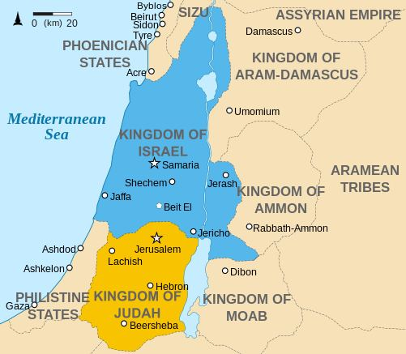

Remember, you slew a man and fell into a dispute among yourselves as to the crime. But Allah was to bring forth what you did hide. So, We said, "Strike with a piece of the (heifer)." Thus, Allah brings the dead to life and shows you His Signs, perchance you may understand. Thenceforth were your hearts hardened. They became like a rock and even worse in hardness. For among rocks, there are some from which rivers gush forth, others there are which when split asunder send forth water, and others which sink for fear of Allah. And Allah is not unmindful of what you do. Can you entertain the hope that they will believe in you, seeing that a party of them heard the Word of Allah and perverted it knowingly, after they understood it? Remarks:
মনে রেখো, তোমরা একজন মানুষকে হত্যা করেছিলে এবং অপরাধ নিয়ে নিজেদের মধ্যে বিবাদে পড়েছিলে। কিন্তু তোমরা যা লুকিয়ে রেখেছ আল্লাহ তা প্রকাশ করবেন। অতঃপর আমরা বললাম, গাভীর একটি অংশ দিয়ে আঘাত কর। এভাবে আল্লাহ মৃতকে জীবিত করেন এবং তোমাদেরকে তাঁর নিদর্শন দেখান, যাতে তোমরা বুঝতে পার। এরপর থেকে তোমাদের হৃদয় কঠিন হয়ে গেল। তারা পাথরের মতো এবং কঠোরতায় আরও খারাপ হয়ে গেল। কারণ পাথরের মধ্যে এমন কিছু আছে যেগুলো থেকে নদী প্রবাহিত হয়, আবার কিছু আছে যা বিদীর্ণ হলে পানি বের হয়, আবার কিছু আছে যা আল্লাহর ভয়ে ডুবে যায়। আর তোমরা যা কর আল্লাহ সে সম্পর্কে বেখবর নন। আপনি কি এই আশা করতে পারেন যে, তারা আপনার প্রতি ঈমান আনবে, কারণ তাদের একটি দল আল্লাহর বাণী শুনেছে এবং বুঝে ওঠার পর জেনেশুনে তা বিকৃত করেছে? মন্তব্য:
Once the murdered person was made alive as a witness to the crime, they turned hard—not to accept the truth, come-what-may. Thus, Prophet Muhammad (pbuh) was told, not to entertain hope that this type of people (like rocks) would accept him. The verses mention that some rocks produce water. There are rocks in the space which send forth water when they split asunder. The primitive Earth did not have water. A few observations suggest that the oceans might have formed due to the fall of water-bearing asteroids.
একবার খুন হওয়া ব্যক্তিকে অপরাধের সাক্ষী হিসাবে জীবিত করা হলে, তারা কঠোর হয়ে ওঠে-সত্যকে মেনে নিতে না, যা-ই হোক। সুতরাং, নবী মুহাম্মদ (সাঃ) কে বলা হয়েছিল, এই ধরণের লোকেরা (পাথরের মতো) তাকে গ্রহণ করবে এই আশায় বিনোদন না দিতে। আয়াতে উল্লেখ আছে যে কিছু শিলা পানি উৎপন্ন করে। মহাকাশে এমন কিছু শিলা আছে যেগুলো বিভক্ত হয়ে পানি বের করে দেয়। আদিম পৃথিবীতে পানি ছিল না। কিছু পর্যবেক্ষণ থেকে বোঝা যায় যে জল বহনকারী গ্রহাণুগুলির পতনের কারণে মহাসাগরগুলি তৈরি হতে পারে।
Behold! When they meet the men of Faith, they say: ―We believe‖. But when they meet each other in private, they say: ―Shall you tell them what Allah has revealed to you that they may engage you in argument about it before your Lord?‖ Do you not understand? Know they not that Allah knows what they conceal and what they reveal? And there are among them illiterates, who know not the Book but desires, and they do nothing but conjecture. Then woe to those who write the Book with their own hands and then say: "This is from Allah" to traffic with it for a miserable price! Woe to them for what their hands do write and for the gain they make thereby! And they say: "The Fire shall not touch us, but for a few numbered days." Say: "Have you taken a promise from Allah for He never breaks His promise? Or is it that you say of Allah what you do not know?" Nay, those who seek gain in evil and are girt round by their sins, they are companions of the Fire; therein shall they abide. But those who have faith and work righteousness, they are companions of the Jannaat; therein shall they abide.
দেখো! যখন তারা ঈমানদারদের সাথে মিলিত হয়, তখন তারা বলে: “আমরা ঈমান এনেছি”। কিন্তু যখন তারা একে অপরের সাথে একান্তে মিলিত হয়, তখন তারা বলে: "তোমরা কি তাদেরকে বলবে যে আল্লাহ তোমাদের কাছে যা নাযিল করেছেন, যাতে তারা তোমাদের প্রতিপালকের সামনে এ বিষয়ে বিতর্কে লিপ্ত হয়?" তোমরা কি বুঝ না? তারা কি জানে না যে, তারা যা গোপন করে এবং যা প্রকাশ করে আল্লাহ তা জানেন? আর তাদের মধ্যে এমন কিছু নিরক্ষর আছে, যারা কিতাব জানে না শুধু আকাঙ্ক্ষা এবং তারা অনুমান ছাড়া আর কিছুই করে না। অতঃপর আফসোস তাদের জন্য যারা নিজের হাতে কিতাব লেখে এবং তারপর বলে: "এটি আল্লাহর পক্ষ থেকে" একটি কৃপণ মূল্যের বিনিময়ে এটি দিয়ে যাতায়াত করা! তাদের হাত যা লেখে এবং এর দ্বারা তারা লাভ করে তার জন্য তাদের জন্য ধিক! এবং তারা বলেঃ আগুন আমাদের স্পর্শ করবে না, তবে কয়েক দিন। বল, "তোমরা কি আল্লাহর কাছ থেকে প্রতিশ্রুতি নিয়েছ কেননা তিনি কখনো তাঁর প্রতিশ্রুতি ভঙ্গ করেন না? নাকি তোমরা আল্লাহর ব্যাপারে এমন কথা বলছ যা তোমরা জান না?" বরং, যারা মন্দ কাজে লাভ কামনা করে এবং তাদের পাপ দ্বারা পরিবেষ্টিত, তারা জাহান্নামের সঙ্গী। তারা সেখানে স্থায়ী হবে। কিন্তু যাদের ঈমান আছে ও সৎ কাজ তারাই জান্নাতের সাথী; তারা সেখানে স্থায়ী হবে।
And remember, We took a covenant from the Children of Israel: Worship none but Allah, treat with kindness your parents and kindred and orphans and those in need, speak fair to the people, establish salat and give zakat—then did you turn back, except a few among you, and you backslide. And remember, We took your covenant: Shed no blood among you, nor turn out your own people from your homes, and this you solemnly ratified, and to this you can bear witness. After this, it is you the same people who slay among yourselves, and banish a party of you from their homes, assist against them in guilt and transgression, and if they come to you as captives, you ransom them, though it was not lawful for you to banish them. Then is it only a part of the Book that you believe in, and do you reject the rest? But what is the reward for those among you who behave like this but disgrace in this life? And on the Day of Judgment, they shall be consigned to the most grievous penalty; for Allah is not unmindful of what you do. These are the people who buy the life of this world at the price of the Hereafter; their penalty shall not be lightened, nor shall they be helped. Remarks:
আর স্মরণ কর, আমরা বনী ইসরাঈলের কাছ থেকে অঙ্গীকার নিয়েছিলাম: আল্লাহ ছাড়া আর কারো ইবাদত করবে না, পিতা-মাতা, আত্মীয়-স্বজন, এতিম এবং অভাবগ্রস্তদের সাথে সদ্ব্যবহার করবে, মানুষের সাথে ন্যায়সঙ্গত কথা বলবে, ছালাত কায়েম করবে এবং যাকাত দেবে- অতঃপর তোমাদের মধ্যে কয়েকজন ব্যতীত তোমরা মুখ ফিরিয়ে নিলে এবং পিছপা হও। এবং মনে রাখবেন, আমরা আপনার সাথে অঙ্গীকার নিয়েছিলাম: তোমাদের মধ্যে কোন রক্তপাত করবেন না এবং আপনার নিজের লোকদেরকে আপনার ঘর থেকে তাড়িয়ে দেবেন না, এবং এটি আপনি আন্তরিকভাবে অনুমোদন করেছেন এবং আপনি এর সাক্ষ্য দিতে পারেন। এর পরে, তোমরাই সেই লোক যারা নিজেদের মধ্যে হত্যা কর, এবং তোমাদের একটি দলকে তাদের গৃহ থেকে বের করে দাও, তাদের বিরুদ্ধে অপরাধ ও সীমালঙ্ঘনে সাহায্য কর এবং যদি তারা বন্দী হয়ে তোমাদের কাছে আসে, তবে তোমরা তাদের মুক্তিপণ দিয়েছ, যদিও তাদের তাড়ানো তোমাদের জন্য বৈধ ছিল না। তাহলে কি শুধু কিতাবের একটি অংশের প্রতি বিশ্বাস স্থাপন করেন এবং বাকি অংশকে অস্বীকার করেন? কিন্তু তোমাদের মধ্যে যারা এমন আচরণ করে তাদের জন্য কি পুরস্কার আছে এই জীবনে? এবং বিচারের দিন, তারা সবচেয়ে কঠিন শাস্তির জন্য প্রেরণ করা হবে; কারণ তোমরা যা কর আল্লাহ সে সম্পর্কে বেখবর নন। এরা সেসব লোক যারা আখেরাতের মূল্যে দুনিয়ার জীবন ক্রয় করে; তাদের শাস্তি হালকা করা হবে না এবং তাদের সাহায্য করা হবে না। মন্তব্য:
After Moses, Joshua became the leader of Jewish People and captured Canaan. Joshua was helper of Moses. Most likely, he was the one that carried cooked fish while Moses visited Khidr. In Canaan, they were living in tribes for about 125 years. According to the instruction of Moses, they were not allowed to make any King, Kingdom, and Government (still, the Rabbis do not support the formation of a state). But they were feeling the need of a Kingdom and were praying to God through the Prophet of the time. God made a Kingdom for them and led it by three divinely guided Kings: Saul, David, and Solomon. In 1025 BCE, Talut (Saul) became the first king (how he became King is described in Section-41 of this Chapter). After Talut, his son in law, David, became the king. After David, his son, Solomon, became the king. Once Solomon died, many of the Jews revolted against religious rule. They wanted heavy yoke (religious rule) mounted on them to be removed. Rehoboam (Solomon‘s Son) had blessing of Solomon. After Solomon, he became king, but many denied to accept him. A civil war broke out. In and around 930 BCE, the country was divided into two kingdoms. Southern half including Jerusalem remained with Rehoboam and was named "Judah". Solomon's another son, Jeroboam, took the northern half and named it ―Israel‖. Many were killed, looted, and evicted in the process.
মূসার পরে, জোশুয়া ইহুদিদের নেতা হন এবং কেনান দখল করেন। যিহোশূয় মোশির সাহায্যকারী ছিলেন। সম্ভবত, তিনিই সেই ব্যক্তি যিনি রান্না করা মাছ বহন করেছিলেন যখন মূসা খিদরে গিয়েছিলেন। কেনানে, তারা প্রায় 125 বছর ধরে উপজাতিতে বসবাস করছিল। মূসার নির্দেশ অনুসারে, তাদের কোন রাজা, রাজ্য এবং সরকার করার অনুমতি দেওয়া হয়নি (এখনও, রাব্বিরা রাষ্ট্র গঠনকে সমর্থন করে না)। কিন্তু তারা একটি রাজ্যের প্রয়োজন অনুভব করছিল এবং সে সময়ের নবীর মাধ্যমে আল্লাহর কাছে প্রার্থনা করছিল। ঈশ্বর তাদের জন্য একটি রাজ্য তৈরি করেছিলেন এবং তিনজন ঐশ্বরিকভাবে পরিচালিত রাজাদের দ্বারা এটি পরিচালনা করেছিলেন: শৌল, ডেভিড এবং সলোমন। 1025 খ্রিস্টপূর্বাব্দে, তালুত (শৌল) প্রথম রাজা হয়েছিলেন (যেভাবে তিনি রাজা হয়েছিলেন এই অধ্যায়ের ধারা-41 এ বর্ণিত হয়েছে)। তালুতের পর তার জামাই দাউদ রাজা হন। দাউদের পর তাঁর পুত্র সোলায়মান রাজা হন। একবার সলোমন মারা গেলে, অনেক ইহুদি ধর্মীয় শাসনের বিরুদ্ধে বিদ্রোহ করেছিল। তারা চেয়েছিল তাদের উপর চাপানো ভারী জোয়াল (ধর্মীয় শাসন) সরানো হোক। রহবিয়াম (সলোমনের পুত্র) শলোমনের আশীর্বাদ পেয়েছিলেন। সলোমনের পরে, তিনি রাজা হন, কিন্তু অনেকে তাকে গ্রহণ করতে অস্বীকার করেন। একটি গৃহযুদ্ধ শুরু হয়। 930 খ্রিস্টপূর্বাব্দে এবং আশেপাশে, দেশটি দুটি রাজ্যে বিভক্ত ছিল। জেরুজালেম সহ দক্ষিণ অর্ধেক রেহবিয়ামের কাছে থেকে যায় এবং তার নাম রাখা হয় "জুদাহ"। সলোমনের আরেক পুত্র, যারবিয়াম, উত্তরের অর্ধেক নিয়েছিলেন এবং এর নাম রাখেন "ইস্রায়েল"। এই প্রক্রিয়ায় অনেককে হত্যা করা হয়, লুট করা হয় এবং উচ্ছেদ করা হয়।
FIGURE 2.23: Kingdom of Judah and Israel

চিত্র 2_23 / Figure 2_23
চিত্র 2.23: জুদাহ এবং ইস্রায়েল রাজ্য
চিত্র 2_23 / Figure 2_23
1. Kingdom of ―Israel‖ (Northern Kingdom)
1. 'ইসরায়েল' রাজ্য (উত্তর রাজ্য)
After Solomon, ten tribes [Reuben, Simeon, Dan, Naphtali, Gad, Asher, Issachar, Zebulun, Children of Joseph (Ephraim and Manasseh) and Benjamin] under Jeroboam formed the Kingdom of Israel with its capital in Samaria. Freedom of humanity prevailed in the Kingdom. Soon many began to worship the idols of Baal and Cow. The Kingdom lasted a little over 200 years. The Assyrians conquered the Kingdom, and by 721 BCE they exiled the Tribes in the east of present day Iran. A little description about their location is available in Holy Bible—it points out present day Afghanistan:
সলোমনের পরে, দশটি গোত্র [রুবেন, সিমিওন, দান, নাফতালি, গাদ, আশের, ইসাখার, জেবুলুন, জোসেফের সন্তান (ইফ্রাইম এবং মানসেহ) এবং বেঞ্জামিন] যারবিয়ামের অধীনে ইস্রায়েল রাজ্য গঠন করেছিল যার রাজধানী সামরিয়াতে ছিল। রাজ্যে মানবতার স্বাধীনতা বিরাজ করে। শীঘ্রই অনেকে বাল এবং গরুর মূর্তি পূজা করতে শুরু করে। রাজ্যটি 200 বছরেরও বেশি সময় ধরে চলেছিল। অ্যাসিরিয়ানরা রাজ্য জয় করেছিল এবং 721 খ্রিস্টপূর্বাব্দের মধ্যে তারা বর্তমান ইরানের পূর্বে উপজাতিদের নির্বাসিত করেছিল। তাদের অবস্থান সম্পর্কে একটি সামান্য বিবরণ পবিত্র বাইবেলে পাওয়া যায়-এটি বর্তমান আফগানিস্তানকে নির্দেশ করে:
"In the ninth year of Hoshea, the king of Assyria captured Samaria, exiled the Israelites to Asshur and made them settle in Halah, at the banks of Habor, the river of Gozan as well as in the cities of the Medes.‖- 2 Kings 17. 6, Holy Bible
"হোশেয়ার নবম বছরে, আসিরিয়ার রাজা শমরিয়া দখল করেন, ইস্রায়েলীয়দের আশুরে নির্বাসিত করেন এবং হাবোর নদীর তীরে, গোজান নদীর তীরে এবং মেদের শহরগুলিতে তাদের বসতি স্থাপন করেন।"- 2 রাজা 17. 6, পবিত্র বাইবেল
"The king of Assyria deported the Israelites to Assyria and settled them in Halah, on the Habor, the river of Gozan, and in the cities of the Medes.‖ - 2 Kings 18. 1 Holy Bible
"আসিরিয়ার রাজা ইস্রায়েলীয়দেরকে আসিরিয়াতে নির্বাসন দিয়েছিলেন এবং হালাতে, হাবোর, গোজান নদীর তীরে এবং মেডিসদের শহরগুলিতে তাদের বসতি স্থাপন করেছিলেন।" - 2 রাজা 18. 1 পবিত্র বাইবেল
"So the God of Israel brought against them the anger of Pul, king of Assyria and of Tiglath- pileser, king of Assyria, who deported the tribes of Reuben, Gad, and the half tribe of Manasseh. They were taken off to Halah near Habor and the river Gozan. They are still there today.‖ - 1 Chronicles 5. 26 Holy Bible
"অতএব ইস্রায়েলের ঈশ্বর তাদের বিরুদ্ধে আসিরিয়ার রাজা পুল এবং আসিরিয়ার রাজা তিগ্লাথ-পিলেসারের ক্রোধ এনেছিলেন, যারা রূবেন, গাদ এবং মনঃশির অর্ধেক গোত্রকে নির্বাসন দিয়েছিলেন। তাদের হাবোর এবং গোজান নদীর কাছে হালাতে নিয়ে যাওয়া হয়েছিল। তারা আজও সেখানে আছে।'
―Halah‖ is present day Heart. River ―Gozan‖ is River Gozni. ―Habor‖ is Peshwar (Pesh-Habor). All are Afghan Territories. They never returned to Israel and have become known as the "Lost Tribes of Israel." According to the Quran, these lost tribes will return to Jerusalem after the breakout of Gog Magog (during the reign of Jesus Christ). Many of present day Afghans may be from the Lost Tribes. Some of Afghan cultural activities are same as ancient Jewish cultural activities. They possess similar physical appearances and eye-colors. The names of Tribes are similar as well:
"হালাহ" বর্তমান সময়ের হৃদয়। গোজন নদী হল গোজনী নদী। ―হাবর‖ হল পেশওয়ার (পেশ-হাবর)। সবগুলোই আফগান অঞ্চল। তারা ইস্রায়েলে ফিরে আসেনি এবং "ইসরায়েলের হারিয়ে যাওয়া উপজাতি" হিসাবে পরিচিত হয়ে উঠেছে। কোরান অনুসারে, এই হারানো গোত্রগুলি গোগ মাগোগ (যীশু খ্রিস্টের রাজত্বের সময়) ভেঙে যাওয়ার পরে জেরুজালেমে ফিরে আসবে। বর্তমান সময়ের আফগানদের অনেকেই হয়তো হারিয়ে যাওয়া উপজাতিদের থেকে। আফগান সাংস্কৃতিক কার্যক্রমের কিছু প্রাচীন ইহুদি সাংস্কৃতিক কর্মকাণ্ডের মতোই। তারা একই রকম শারীরিক চেহারা এবং চোখের রঙের অধিকারী। উপজাতিদের নামও একই রকম:
Lost Tribes Afghan Tribes Reuven – Rabbani Shimon – Shinwari Levi – Liwani Naftali – Daffani Gad – Ghagi Ashor – Ashuri Ephraim – Afridi Children of Yossef – Yusuf Sai
হারিয়ে যাওয়া উপজাতি আফগান উপজাতি রিউভেন - রব্বানী শিমন - শিনওয়ারি লেভি - লিওয়ানি নাফতালি - দাফানি গাদ - ঘাগি আশোর - আশুরি এফ্রাইম - আফ্রিদি ইউসেফের সন্তান - ইউসুফ সাই
Some people from the lost tribes moved to Europe. Among them, the people from the Tribe of Dan have clear footprints. Macedonia, Denmark, River Danube are after the name of Dan. ―Manasseh‖ is identified in India. Black Israelites from Ethiopia have returned. They are descendants of Bilqis (Queen of Seba) and Solomon. So, they are not from the Lost Tribes.
হারিয়ে যাওয়া উপজাতির কিছু মানুষ ইউরোপে চলে যায়। তাদের মধ্যে, ড্যান উপজাতির লোকদের স্পষ্ট পায়ের ছাপ রয়েছে। ম্যাসিডোনিয়া, ডেনমার্ক, দানিউব নদীর নাম ড্যানের নামে। 'মানসেহ' ভারতে চিহ্নিত। ইথিওপিয়া থেকে কালো ইসরায়েলীরা ফিরে এসেছে। তারা বিলকিস (সেবার রানী) এবং সোলায়মানের বংশধর। সুতরাং, তারা হারিয়ে যাওয়া উপজাতির নয়।
2. Kingdom of ―Judah‖ (Southern Kingdom)
2. 'জুদা' রাজ্য (দক্ষিণ রাজ্য)
The religious system prevailed in Judah under Rehoboam. However, only two tribes [Benjamin and Judah] remained in his kingdom. After about 344 years, in 586 BCE, Babylonian King Nebuchadnezzar captured the Kingdom of Judah. He destroyed the Temple of Solomon and forcefully shifted them to Babylon. After about 47 years, in 539 BCE, Babylon fell to the Persian Emperor Cyrus the Great (Dhul-Qarnain). He allowed the Jews to return to Jerusalem. Their descendants are Jewish people of today. The captivity lasted for about 48 years. This short duration exile is known as ―Babylonian Captivity‖. The song, ―By the rivers of Babylon, there we sat down - Yeah, we wept, when we remembered Zion…‖ is a recollection of that period. Cyrus allowed to re-build the Temple. The Temple is known as the Second Temple. Later, in 70 CE, Romans destroyed the Second Temple utterly. Not a stone remained on another stone.
রহবিয়ামের অধীনে ধর্মীয় ব্যবস্থা জুডাতে বিরাজ করেছিল। যাইহোক, শুধুমাত্র দুটি উপজাতি [বেঞ্জামিন এবং জুডাহ] তার রাজ্যে থেকে যায়। প্রায় 344 বছর পর, 586 খ্রিস্টপূর্বাব্দে, ব্যাবিলনীয় রাজা নেবুচাদনেজার জুদাহ রাজ্য দখল করেন। তিনি সলোমনের মন্দির ধ্বংস করেন এবং জোরপূর্বক তাদের ব্যাবিলনে স্থানান্তরিত করেন। প্রায় 47 বছর পর, 539 খ্রিস্টপূর্বাব্দে, ব্যাবিলন পারস্য সম্রাট সাইরাস দ্য গ্রেটের (ধুল-কারনাইন) হাতে পড়ে। তিনি ইহুদিদের জেরুজালেমে ফিরে যাওয়ার অনুমতি দেন। তাদের বংশধররা বর্তমান সময়ের ইহুদি মানুষ। বন্দিত্ব প্রায় 48 বছর স্থায়ী হয়েছিল। এই স্বল্প সময়ের নির্বাসন "ব্যাবিলনীয় বন্দিত্ব" নামে পরিচিত। গানটি, "ব্যাবিলনের নদীর ধারে, সেখানে আমরা বসেছিলাম - হ্যাঁ, আমরা কেঁদেছিলাম, যখন আমরা জিয়নকে স্মরণ করি..." সেই সময়ের স্মৃতি। সাইরাস মন্দির পুনর্নির্মাণের অনুমতি দেন। মন্দিরটি দ্বিতীয় মন্দির নামে পরিচিত। পরবর্তীতে, 70 খ্রিস্টাব্দে, রোমানরা দ্বিতীয় মন্দিরটি সম্পূর্ণরূপে ধ্বংস করে দেয়। একটি পাথর অন্য পাথরের উপর রইল না।
We gave Moses the Book and followed him up with a succession of apostles. We gave Jesus the son of Mary clear signs and strengthened him with the Holy Soul. Is it that whenever there comes to you an apostle, with what you yourselves desire not, you are puffed up with pride? Some you called impostors and others you slay! They say, "Our hearts are wrapped." Nay, Allah's curse is on them for their blasphemy—little is it they believe. And, when there comes to them a Book from Allah confirming what is with them—although from the old they had prayed for victory against those without Faith—when there comes to them that which they have recognized, they refuse to believe in it, but the curse of Allah is on those without Faith. Miserable is the price for which they have sold their souls—in that they deny which Allah has sent down in insolent envy that Allah of His Grace should send it to any of His servants He pleases. Thus, have they drawn on themselves Wrath upon Wrath; and humiliating is the punishment of those who reject Faith. When it is said to them: Believe in what Allah has sent down, they say, "We believe in what was sent down to us"— yet they reject all besides, even if it be Truth confirming what is with them. Say: "Why then have you slain the prophets of Allah in times gone by, if you did indeed believe?" There came to you Moses with clear signs, yet you worshipped the Calf after that, and you did behave wrongfully. And remember, We took your Covenant and We raised above you of Mount: "Hold firmly to what We have given you and hearken." They said: "We hear and we disobey." And their hearts absorbed the Calf because of their Faithlessness. Say: "Worst indeed is that which your faith enjoins on you, if you are believers!" Say: "If the last Home with Allah be for you specially and not for anyone else, then seek you for death if you are sincere." But they will never seek for death on account of which their hands have sent on before them. And Allah is well acquainted with the wrongdoers. You will indeed find them of all people most greedy of life—even more than the idolaters. Each one of them wishes he could be given a life of a thousand years. But the grant of such life will not save him from punishment. For Allah sees well all that they do. Say: Whoever is an enemy to Gabriel for he brings it down to your heart by Allah's will a confirmation of what went before and guidance and glad tidings for those who believe—whoever is an enemy to Allah and His angels and apostles, to Gabriel and Michael—lo! Allah is an enemy to those who reject Faith. We have sent down to you Manifest Verses, and none reject them but those who are perverse. Is it not that every time they make a Covenant, some party among them throws it aside; nay most of them are faithless. And when there came to them an apostle from Allah confirming what was with them, a party of the People of the Book threw away the Book of Allah behind their backs, as if they did not know! They followed what the evil ones gave out against the power of Solomon; the blasphemers were not Solomon but the evil ones teaching men magic and such things as came down at Babylon to the angels, Harut and Marut. But neither of these taught anyone without saying: "We are only for trial, so do not blaspheme." They learned from them the means to sow discord between man and wife. But they could not thus harm anyone except by Allah's permission. And they learned what harmed them, not what profited them. And they knew that the buyers of (black magic) would have no share in the happiness of the Hereafter. And vile was the price for which they did sell their souls—if they but knew! If they had kept their Faith and guarded themselves from evil, far better had been the reward from their Lord—if they but knew! Remarks
আমরা মূসাকে কিতাব দিয়েছিলাম এবং তাকে অনুসরণ করেছিলাম একের পর এক রসূল। আমরা মরিয়ম পুত্র ঈসাকে সুস্পষ্ট নিদর্শন দান করেছি এবং তাকে পবিত্র আত্মা দ্বারা শক্তিশালী করেছি। যখনই তোমাদের কাছে কোন রসূল আসে, যা তোমরা নিজেরা চাও না, তখনই কি তোমরা অহংকারে ফুঁসে উঠে? কাউকে আপনি প্রতারক বলেছেন আবার কাউকে হত্যা করেছেন! তারা বলে, আমাদের অন্তর আবৃত। বরং তাদের উপর আল্লাহর অভিশাপ তাদের পরনিন্দার জন্য, তারা খুব কমই বিশ্বাস করে। এবং, যখন তাদের কাছে আল্লাহর পক্ষ থেকে একটি কিতাব আসে যা তাদের কাছে যা আছে তার সত্যায়ন করে - যদিও তারা প্রাচীনকাল থেকে অবিশ্বাসীদের বিরুদ্ধে বিজয়ের জন্য প্রার্থনা করেছিল - যখন তাদের কাছে এমন কিছু আসে যা তারা স্বীকৃতি দিয়েছে, তখন তারা তা বিশ্বাস করতে অস্বীকার করে, কিন্তু যারা অবিশ্বাসী তাদের উপর আল্লাহর অভিশাপ। দুঃখজনক সেই মূল্য যার জন্য তারা তাদের আত্মা বিক্রি করেছে- যে তারা অস্বীকার করে যা আল্লাহ নাযিল করেছেন উদ্ধত হিংসাবশতঃ আল্লাহ তাঁর অনুগ্রহে তাঁর বান্দাদের মধ্যে যাকে ইচ্ছা তা পাঠান। এইভাবে, তারা নিজেদের উপর ক্রোধের উপর ক্রোধ টেনেছে; আর যারা ঈমান আনে তাদের জন্য অপমানজনক শাস্তি। যখন তাদের বলা হয়: আল্লাহ যা নাযিল করেছেন তাতে বিশ্বাস কর, তখন তারা বলে, "আমাদের প্রতি যা নাযিল করা হয়েছে আমরা তাতে বিশ্বাস করি" - তবুও তারা এ ছাড়া অন্য সব কিছুকে প্রত্যাখ্যান করে, যদিও এটি তাদের কাছে যা আছে তা সত্য বলে প্রমাণ করে। বলুন, তাহলে কেন তোমরা আল্লাহর নবীদেরকে অতীতে হত্যা করেছ, যদি তোমরা সত্যই বিশ্বাসী হয়ে থাক? তোমাদের কাছে মূসা সুস্পষ্ট নিদর্শন নিয়ে এসেছিল, অতঃপর তোমরা এরপর বাছুরের পূজা করেছ এবং অন্যায় করেছ। আর মনে রেখো, আমরা তোমাদের প্রতিশ্রুতি গ্রহণ করেছি এবং তোমাদের উপরে পর্বতের উপরে তুলেছি: "আমি তোমাদেরকে যা দিয়েছি তা দৃঢ়ভাবে ধর এবং শোন।" তারা বললঃ আমরা শুনলাম এবং অমান্য করলাম। এবং তাদের অন্তর তাদের বিশ্বাসহীনতার কারণে বাছুরকে শুষে নেয়। বলুনঃ তোমাদের ঈমান তোমাদেরকে যা নির্দেশ করে তা নিকৃষ্ট, যদি তোমরা মুমিন হও! বলুন, "যদি আল্লাহর কাছে শেষ আবাসটি বিশেষভাবে তোমাদের জন্য হয় এবং অন্য কারো জন্য না হয়, তবে তোমরা যদি আন্তরিক হও তবে মৃত্যু কামনা কর।" কিন্তু তারা কখনই মৃত্যু কামনা করবে না যে কারণে তাদের হাত তাদের সামনে পাঠিয়েছে। আর আল্লাহ জালেমদের সম্পর্কে ভালো করেই জানেন। আপনি প্রকৃতপক্ষে তাদের জীবনের সবচেয়ে লোভী দেখতে পাবেন - এমনকি মুশরিকদের থেকেও বেশি। তাদের প্রত্যেকেই কামনা করে যে তাকে হাজার বছরের জীবন দেওয়া হোক। কিন্তু এমন জীবন দান তাকে শাস্তি থেকে বাঁচাতে পারবে না। কারণ তারা যা করে আল্লাহ তা দেখেন। বলুন: যে কেউ জিব্রাইলের শত্রু কেননা সে আল্লাহর ইচ্ছায় এটিকে আপনার হৃদয়ে নামিয়ে দেয় পূর্বে যা হয়েছে তার সত্যতা এবং হেদায়েত ও সুসংবাদ তাদের জন্য যারা ঈমান এনেছে - যারা আল্লাহ ও তাঁর ফেরেশতা ও রসূলগণ, জিব্রাইল ও মাইকেলের শত্রু। যারা বিশ্বাস অস্বীকার করে আল্লাহ তাদের শত্রু। আমি আপনার প্রতি সুস্পষ্ট আয়াত নাযিল করেছি, আর কেউ তাদের অস্বীকার করে না কিন্তু যারা পথভ্রষ্ট। এটা কি নয় যে যখনই তারা চুক্তি করে, তাদের মধ্যে কোন না কোন দল তা ফেলে দেয়; বরং তাদের অধিকাংশই অবিশ্বাসী। অতঃপর যখন তাদের কাছে আল্লাহর পক্ষ থেকে একজন রসূল এলেন যা তাদের কাছে ছিল তার সত্যায়নকারী, তখন আহলে কিতাবদের একটি দল আল্লাহর কিতাবকে তাদের পিঠের আড়ালে ফেলে দিল, যেন তারা জানেই না! শলোমনের শক্তির বিরুদ্ধে দুষ্টরা যা দিয়েছিল তারা তা অনুসরণ করেছিল; নিন্দাকারীরা সোলায়মান ছিলেন না, কিন্তু দুষ্টরা ছিলেন যাদুবিদ্যা এবং ব্যাবিলনে ফেরেশতা, হারুত ও মারুতদের কাছে যা এসেছিলেন তা শিক্ষা দিচ্ছিলেন। কিন্তু এগুলোর কোনটিই কাউকে এই বলে শিক্ষা দেয়নি যে: "আমরা শুধু বিচারের জন্য এসেছি, তাই নিন্দা করো না।" তারা তাদের কাছ থেকে পুরুষ এবং স্ত্রীর মধ্যে বিভেদ বপন করার উপায় শিখেছিল। কিন্তু আল্লাহর হুকুম ছাড়া তারা এভাবে কারো ক্ষতি করতে পারেনি। এবং তারা শিখেছে কি তাদের ক্ষতি করেছে, কোনটি তাদের লাভজনক নয়। এবং তারা জানত যে (কালো জাদু) ক্রেতাদের আখেরাতের সুখে কোন অংশীদার নেই। এবং যে মূল্যে তারা তাদের আত্মা বিক্রি করেছিল তা জঘন্য ছিল - যদি তারা জানত! যদি তারা তাদের ঈমান রাখত এবং মন্দ কাজ থেকে নিজেদেরকে রক্ষা করত, তবে তাদের পালনকর্তার কাছ থেকে পাওয়া প্রতিদান অনেক ভালো হতো- যদি তারা জানত! মন্তব্য
1. Harut and Marut
1. হারুত ও মারুত
As people say, the angels of the Universe (Samawaat / Skies) observed that humans on Earth were disobeying Allah and committing sinful deeds. They looked down upon humans believing that they themselves would not commit such acts, and thought humans should be punished by Allah. However, Allah was merciful towards humans. The angels approached Allah with their arguments, expressing their concerns. Allah gave two angels, Harut and Marut, human-like passions and desires and sent them to Earth. These two were more active in demeaning humans. However, upon arriving on Earth, they quickly fell in love with a beautiful woman and eagerly sought to have sex with her. The woman, in turn, made them bow down to her idol, drink wine, and commit murder. She eventually learned a few secret magical words from them that could lift one into the sky. It is said that she used these words to ascend into the sky, where she was arrested and transformed into the planet Venus as a form of punishment. It may be that the woman‘s soul (nafs) was absorbed into the Venus so that she senses the harshness of the planet. The Venus is the hottest planet of the solar system (hotter than Mercury, closest to the Sun). All planets in the Solar System spin anti-clockwise on their axis but the Venus rotates clockwise. After failing the test, the angels desired to be punished on Earth. Thus, they are said to be suspended upside-down in a well located in Babylon. [One may find the full story in the traditional tafsirs.]
লোকেরা যেমন বলে, মহাবিশ্বের ফেরেশতারা (সামাওয়াত/আকাশ) দেখেছে যে পৃথিবীতে মানুষ আল্লাহর অবাধ্যতা করছে এবং পাপ কাজ করছে। তারা মানুষের প্রতি তুচ্ছ মনে করত এই বিশ্বাস করে যে তারা নিজেরাই এই ধরনের কাজ করবে না, এবং ভেবেছিল যে মানুষকে আল্লাহর দ্বারা শাস্তি দেওয়া উচিত। তবে আল্লাহ মানুষের প্রতি করুণাময় ছিলেন। ফেরেশতারা তাদের উদ্বেগ প্রকাশ করে তাদের যুক্তি দিয়ে আল্লাহর কাছে গেল। আল্লাহ দুই ফেরেশতা হারুত ও মারুতকে মানুষের মতো আবেগ ও আকাঙ্ক্ষা দিয়ে পৃথিবীতে পাঠিয়েছিলেন। এই দুজন মানুষকে হেয় করার জন্য আরও সক্রিয় ছিল। যাইহোক, পৃথিবীতে আসার পরে, তারা দ্রুত একজন সুন্দরী মহিলার প্রেমে পড়েছিল এবং তার সাথে যৌন সম্পর্ক স্থাপনের জন্য আগ্রহ নিয়েছিল। মহিলা, পালাক্রমে, তাদের তার প্রতিমাকে প্রণাম করতে, মদ পান করতে এবং হত্যা করতে বাধ্য করেছিল। তিনি অবশেষে তাদের কাছ থেকে কয়েকটি গোপন জাদুকরী শব্দ শিখেছিলেন যা একটিকে আকাশে তুলতে পারে। বলা হয় যে তিনি এই শব্দগুলি ব্যবহার করেছিলেন আকাশে ওঠার জন্য, যেখানে তাকে গ্রেপ্তার করা হয়েছিল এবং শাস্তি হিসাবে শুক্র গ্রহে রূপান্তরিত হয়েছিল। এটা হতে পারে যে মহিলার আত্মা (নফস) শুক্রে শোষিত হয়েছিল যাতে সে গ্রহের কঠোরতা অনুভব করতে পারে। শুক্র হল সৌরজগতের উষ্ণতম গ্রহ (বুধের চেয়ে গরম, সূর্যের সবচেয়ে কাছে)। সৌরজগতের সমস্ত গ্রহ তাদের অক্ষে ঘড়ির কাঁটার বিপরীত দিকে ঘোরে কিন্তু শুক্র ঘড়ির কাঁটার দিকে ঘোরে। পরীক্ষায় ব্যর্থ হওয়ার পর, ফেরেশতারা পৃথিবীতে শাস্তি পেতে চেয়েছিলেন। এইভাবে, তাদের ব্যাবিলনে অবস্থিত একটি কূপে উল্টোভাবে ঝুলিয়ে রাখা হয়েছে বলে জানা গেছে। [কেউ প্রথাগত তাফসিরে পুরো ঘটনাটি খুঁজে পেতে পারে।]
2. Black Masic
2. কালো ম্যাসিক
A human practicing black magic sells his soul (nafs), maybe in cases, as the verses say: “...And vile was the price for which they did sell their souls...” What could be the selling of soul to a demonic jinn, or spoilling it by cetain practices? A human soul (nafs) is a combination of unknown force fields (not yet discovered as of 2024). A human may sell their nafs to a jinni by rejecting faith in one God and practicing rituals of black magic. Selling the nafs and practicing black magic may also make the nafs a suitable mount for the jinni. Thus, the possessing jinni can enjoy the charms of human life through the possessed human. In return, the jinni may perform certain tasks for the human. A jinni can see the angels and thereby know the near future by observing the descending angels or stealthily hearing them. A jinni can also bring information from a distant area. It may be vindictive to the enemies of the person it possesses and may harm those enemies. There may be another way of practicing black magic where jinns are not involved. A human soul (nafs) is the source of emotions. It is conscious. Similarly, the material world is conscious. The double-slit experiment proves that a sub-atomic particle moving as a wave becomes a particle when observed. So, it understands that it is being observed and becomes an observable particle. Therefore, it should be possible for our nafs to impact the material world. However, a human nafs is not designed to do so. If one can redesign one‘s nafs through meditation or other means to impact the material world, one may gain the power to affect objects. But such redesigning without sufficient knowledge may spoil one‘s nafs.
কালো জাদু অনুশীলনকারী একজন মানুষ তার আত্মা (নফস) বিক্রি করে, হয়ত কিছু ক্ষেত্রে, যেমন আয়াত বলে: "...এবং জঘন্য মূল্য ছিল যার জন্য তারা তাদের আত্মা বিক্রি করেছিল..." একটি শয়তানী জ্বিনের কাছে আত্মা বিক্রি করা বা কিছু অভ্যাস দ্বারা এটি নষ্ট করা কী হতে পারে? একটি মানব আত্মা (নফস) হল অজানা বল ক্ষেত্রগুলির সংমিশ্রণ (এখনও 2024 সালের হিসাবে আবিষ্কৃত হয়নি)। একজন মানুষ এক ঈশ্বরে বিশ্বাসকে প্রত্যাখ্যান করে এবং কালো জাদুর আচার-অনুষ্ঠান অনুশীলন করে একটি জিন্নির কাছে তাদের নফস বিক্রি করতে পারে। নফস বিক্রি করা এবং কালো জাদু অনুশীলন করাও নফসকে জিন্নির জন্য উপযুক্ত মাউন্ট করে তুলতে পারে। এইভাবে, অধিকারী জিনি অধিকারী মানুষের মাধ্যমে মানব জীবনের মোহনীয়তা উপভোগ করতে পারে। বিনিময়ে, জিনি মানুষের জন্য কিছু কাজ সম্পাদন করতে পারে। একটি জিনি ফেরেশতাদের দেখতে পারে এবং এর মাধ্যমে অবতীর্ণ ফেরেশতাদের পর্যবেক্ষণ করে বা চুপিসারে তাদের কথা শুনে অদূর ভবিষ্যতে জানতে পারে। একজন জিন্নি দূরবর্তী এলাকা থেকেও তথ্য আনতে পারে। এটি যার অধিকারী তার শত্রুদের প্রতি প্রতিশোধমূলক হতে পারে এবং সেই শত্রুদের ক্ষতি করতে পারে। কালো জাদু অনুশীলনের আরেকটি উপায় থাকতে পারে যেখানে জিন জড়িত নয়। একটি মানুষের আত্মা (নফস) আবেগের উৎস। এটা সচেতন। একইভাবে, বস্তুজগৎ সচেতন। ডাবল-স্লিট পরীক্ষা প্রমাণ করে যে তরঙ্গ হিসাবে চলমান একটি উপ-পারমাণবিক কণা যখন পর্যবেক্ষণ করা হয় তখন একটি কণা হয়ে যায়। সুতরাং, এটি বুঝতে পারে যে এটি পর্যবেক্ষণ করা হচ্ছে এবং একটি পর্যবেক্ষণযোগ্য কণা হয়ে ওঠে। অতএব, আমাদের নফসের পক্ষে বস্তুজগতকে প্রভাবিত করা সম্ভব হওয়া উচিত। যাইহোক, একটি মানুষের নফস এটি করার জন্য ডিজাইন করা হয়নি। বস্তুজগতকে প্রভাবিত করার জন্য যদি কেউ ধ্যান বা অন্য উপায়ের মাধ্যমে নিজের নফসকে নতুনভাবে ডিজাইন করতে পারে, তবে কেউ বস্তুকে প্রভাবিত করার ক্ষমতা অর্জন করতে পারে। কিন্তু পর্যাপ্ত জ্ঞান ছাড়া এই ধরনের নতুন নকশা করা একজনের নফসকে নষ্ট করতে পারে।
3. Word of Black Magic
3. ব্ল্যাক ম্যাজিকের শব্দ